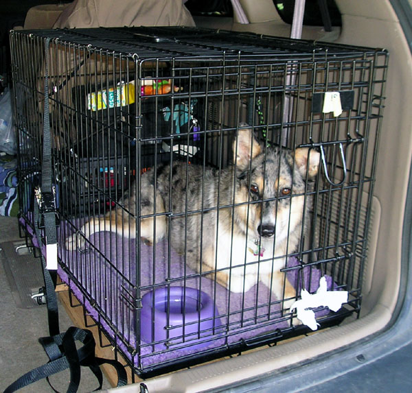
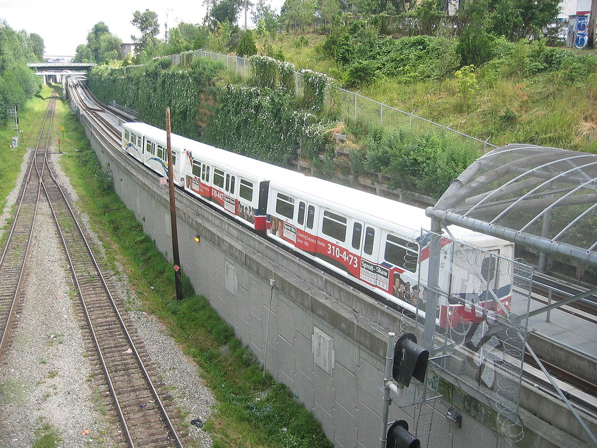
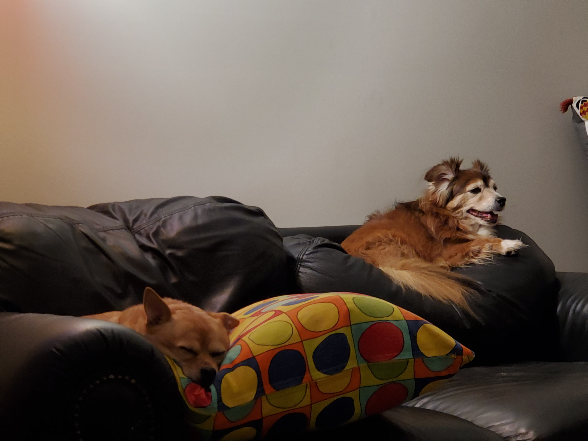
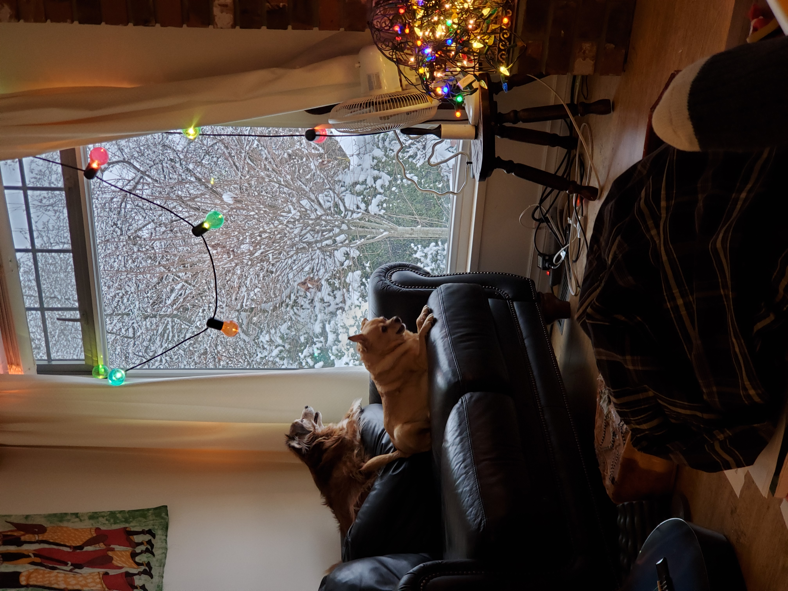

My Pals
- Sally
- Oscar
- Michelle
- Jordan
- Pippi


Mr. Littlebottom came to live with me when I was still living alone. He fit just like a soft, warm sock.Hunter came from the area just beyond Chilliwack. He was 7 months oldish when Animal Control caught him. He had been living feral in the woods for an unknown amount of time. How did he survive? What did he live on?

As I had been previously approved for adopting a puppy so was called in to meet him. He was sitting in a cage in a secluded area of the shelter - not yet in with gen pop as shelter animals may say. He looked confused, a little anxious, and lonely. I said hi to him and then I said he wouldn't be in there long.
I was able to bring him home the next morning with promises to neuter him soon. He loved to run and chase after the elevated sky train. Never sure what he thought it really was but he watched for it on every walk. He would bark and bound up and down when he heard or saw it. This carried on til he passed this spring. The skytrain was his Nemesis.
My apartment was on the third floor facing southeast and had windows on 3 sides. I had placed my loveseat in the southeast corner and that is where Hunter and spent our down time. He loved to watch for action outside. After 17 years that loveseat had a "Hunter"-shaped indentation that still shows. I love it.

Perhaps because he had lived in the wild, Hunter never lost his love for Mother Earth. He always wanted to be in her company.
Hunter loved many people who in turn loved him but here are a few of his favourite people: